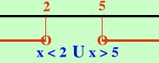

|
Calcolare i valori di x per cui si ha: x2 - 7x + 10 Considero l'equazione associata x2 - 7x + 10 = 0 Risolvo 7 x1,2 = -------------------------- 2 7 x1,2 = ------------------ 2 7 x1,2 = ------------------ 2 7 x1,2 = ------------- 2 x1 = 2 x2 = 5 Ho ordinato le soluzioni: prima quella piu' a sinistra Ho due soluzioni quindi il delta e' maggiore di zero: soluzioni esterne all'intervallo delle radici quindi avremo x oppure in altra notazione  In pratica significa che se sotituisco alla x un valore minore di 2 o maggiore di 5 tutta l'espressione vale un numero maggiore di zero se invece sostituisco un numero compreso fra 2 e 5 otterro' un risultato negativo: Proviamolo per esercizio:
|